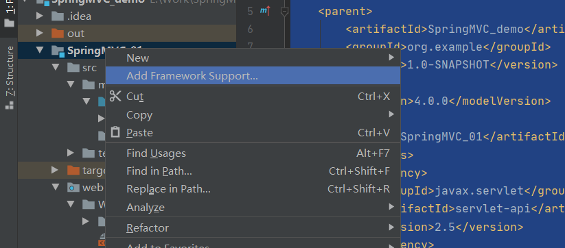
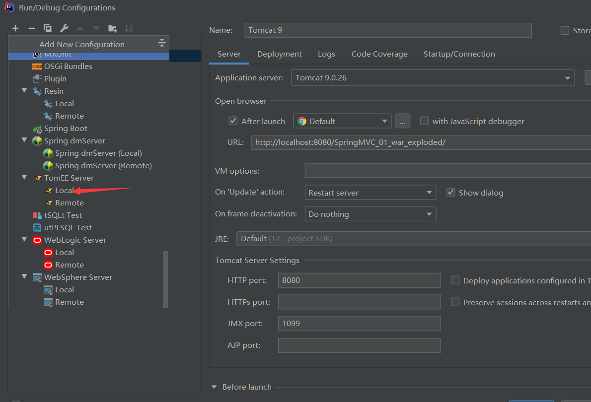

Spring MVC MVC介绍 SSM = Spring+SpringMVC+MyBatis
MVC**(一种设计模式)**:模型（Model），视图（View），控制器（Controller）
dao：数据访问层，全称为data access object，属于一种比较底层，比较基础的操作，对于数据库的操作，具体到对于某个表的增删改查，
service：服务层，被称为服务，粗略的理解就是对一个或多个DAO进行的再次封装，封装成一个服务，所以这里也就不会是一个原子操作了，需要事物控制。
controller：业务层，管理用户的操作，用户界面传过的请求，调用对应的服务（service），完成用户请求的处理；
servlet：转发，重定向
jsp/html：页面
创建Web项目过程 新建MAVEN工程
POM.xml中添加依赖
1 2 3 4 5 6 7 8 9 10 11 12 13 14 15 16 17 18 19 20 21 22 23 24 25 <?xml version="1.0" encoding="UTF-8"?> <project xmlns ="http://maven.apache.org/POM/4.0.0" xmlns:xsi ="http://www.w3.org/2001/XMLSchema-instance" xsi:schemaLocation ="http://maven.apache.org/POM/4.0.0 http://maven.apache.org/xsd/maven-4.0.0.xsd" > <parent > <artifactId > SpringMVC_demo</artifactId > <groupId > org.example</groupId > <version > 1.0-SNAPSHOT</version > </parent > <modelVersion > 4.0.0</modelVersion > <artifactId > SpringMVC_01</artifactId > <dependencies > <dependency > <groupId > javax.servlet</groupId > <artifactId > servlet-api</artifactId > <version > 2.5</version > </dependency > <dependency > <groupId > javax.servlet.jsp</groupId > <artifactId > jsp-api</artifactId > <version > 2.2</version > </dependency > </dependencies > </project >
删除src文件夹，新建Module，作为WEB项目
右键项目，添加Framework

添加Toncat

SpingMVC基本流程 在resource下建立新文件夹springmvc-servlet.xml，导入Spring自带的类
1 2 3 4 5 6 7 8 9 10 11 12 13 14 15 16 17 <?xml version="1.0" encoding="UTF-8"?> <beans xmlns ="http://www.springframework.org/schema/beans" xmlns:xsi ="http://www.w3.org/2001/XMLSchema-instance" xsi:schemaLocation ="http://www.springframework.org/schema/beans http://www.springframework.org/schema/beans/spring-beans.xsd" > <bean class ="org.springframework.web.servlet.handler.BeanNameUrlHandlerMapping" > </bean > <bean class ="org.springframework.web.servlet.mvc.SimpleControllerHandlerAdapter" > </bean > <bean id ="internalResourceViewResolver" class ="org.springframework.web.servlet.view.InternalResourceViewResolver" > <property name ="prefix" value ="/WEB-INF/jsp/" > </property > <property name ="suffix" value =".jsp" > </property > </bean > <bean id ="/hello" class ="com.study.Controller.HelloController" > </bean > </beans >
在web.xml下添加Spring中的的分发器Dispatcher
1 2 3 4 5 6 7 8 9 10 11 12 13 14 15 16 17 18 19 20 21 22 23 24 25 26 27 28 <?xml version="1.0" encoding="UTF-8"?> <web-app xmlns ="http://xmlns.jcp.org/xml/ns/javaee" xmlns:xsi ="http://www.w3.org/2001/XMLSchema-instance" xsi:schemaLocation ="http://xmlns.jcp.org/xml/ns/javaee http://xmlns.jcp.org/xml/ns/javaee/web-app_4_0.xsd" version ="4.0" > <servlet > <servlet-name > springmvc</servlet-name > <servlet-class > org.springframework.web.servlet.DispatcherServlet</servlet-class > <init-param > <param-name > contextConfigLocation</param-name > <param-value > classpath:springmvc-servlet.xml</param-value > </init-param > <load-on-startup > 1</load-on-startup > </servlet > <servlet-mapping > <servlet-name > springmvc</servlet-name > <url-pattern > /</url-pattern > </servlet-mapping > </web-app >
新建一个类实现Spring接口Controller，实现页面的处理（Controller层）
1 2 3 4 5 6 7 8 9 10 11 12 13 14 15 16 17 18 19 20 21 22 package com.study.Controller;import org.springframework.web.servlet.ModelAndView;import org.springframework.web.servlet.mvc.Controller;import javax.servlet.http.HttpServletRequest;import javax.servlet.http.HttpServletResponse;public class HelloController implements Controller @Override public ModelAndView handleRequest (HttpServletRequest request, HttpServletResponse response) throws Exception ModelAndView modelAndView = new ModelAndView(); String result = "Hello,SpringMVC" ; modelAndView.addObject("msg" ,result); modelAndView.setViewName("test" ); return modelAndView; } }
通过注解方式实现Controller层的操作
首先在springmvc-servlet.xml中更改
1 2 3 4 5 6 7 8 9 10 11 12 13 14 15 16 17 18 19 20 21 22 23 <?xml version="1.0" encoding="UTF-8"?> <beans xmlns ="http://www.springframework.org/schema/beans" xmlns:xsi ="http://www.w3.org/2001/XMLSchema-instance" xmlns:context ="http://www.springframework.org/schema/context" xmlns:mvc ="http://www.springframework.org/schema/mvc" xsi:schemaLocation ="http://www.springframework.org/schema/beans http://www.springframework.org/schema/beans/spring-beans.xsd http://www.springframework.org/schema/aop http://www.springframework.org/schema/aop/spring-aop.xsd http://www.springframework.org/schema/context http://www.springframework.org/schema/context/spring-context.xsd http://www.springframework.org/schema/mvc https://www.springframework.org/schema/mvc/spring-mvc.xsd" > <context:component-scan base-package ="com.study.controller" > </context:component-scan > <mvc:default-servlet-handler > </mvc:default-servlet-handler > <mvc:annotation-driven > </mvc:annotation-driven > <bean class ="org.springframework.web.servlet.view.InternalResourceViewResolver" > <property name ="prefix" value ="/WEB-INF/jsp/" > </property > <property name ="suffix" value =".jsp" > </property > </bean > </beans >
接下来看在Controller层类的改变
1 2 3 4 5 6 7 8 9 10 11 12 13 14 15 16 17 18 19 20 21 package com.study.controller;import org.springframework.stereotype.Controller;import org.springframework.ui.Model;import org.springframework.web.bind.annotation.RequestMapping;import org.springframework.web.servlet.ModelAndView;import javax.print.MultiDoc;import javax.servlet.http.HttpServletRequest;import javax.servlet.http.HttpServletResponse;@Controller public class HelloController @RequestMapping("/hello") public String Hello (Model model) model.addAttribute("msg" ,"Hello,SpringMVC" ); return "hello" ; } }
RestFul风格开发 1 2 3 4 5 6 7 8 9 10 11 12 13 @RequestMapping(value = "/test2/{a}/{b}",method = RequestMethod.POST) public String test2 (@PathVariable int a,@PathVariable int b,Model model) int res = a + b; model.addAttribute("res" ,res); return "test2" ; }
这个时候在地址栏输入127.0.0.1：8080/test2/1/2就可以得到输出3
:triangular_flag_on_post: SpringMVC必须要配置的三大件：处理器、映射器、视图解析器
前端参数的传递 要想在Java的处理中接受前端的数据，需要在对应的方法前加@RequestParam注释，获取对应name的value值
1 2 3 4 5 6 7 @GetMapping(value = "/paraTest") public String paraTest (@RequestParam("username") String name,Model model) model.addAttribute("msg" ,name); return "param" ; }
当方法中的参数名与前端传来的name一样时，可不用加此注释，但并不建议。
SpringMVC还可以从前端接收消息直接注册到类中
首先自定义一个实体类
1 2 3 4 5 6 7 8 9 10 11 12 13 14 package com.study.entity;import lombok.AllArgsConstructor;import lombok.Data;import lombok.NoArgsConstructor;@Data @AllArgsConstructor @NoArgsConstructor public class User private String name; private int age; private String sex; }
此时在Controller层中获取前端的数据时会自动填充到方法参数的类中。PS:此时前端传输的参数name要与类中元素名相同
1 2 3 4 5 6 @GetMapping(value = "/entity") public String entityTest (User user,Model model) System.out.println(user); model.addAttribute("msg" ,user.getClass()); return "entity" ; }
乱码的处理 当从前端以POST的形式接收数据时，在java接收时会产生乱码。解决方法如下
以自定义Filter类实现处理，功能较弱
1 2 3 4 5 6 7 8 9 10 11 12 13 14 15 16 17 18 19 20 21 22 23 24 25 26 package com.study.filter;import javax.servlet.*;import java.io.IOException;public class filter implements Filter @Override public void init (FilterConfig filterConfig) throws ServletException } @Override public void doFilter (ServletRequest request, ServletResponse response, FilterChain chain) throws IOException, ServletException request.setCharacterEncoding("utf-8" ); response.setCharacterEncoding("utf-8" ); chain.doFilter(request,response); } @Override public void destroy () } }
在web.xml中添加对应filter
1 2 3 4 5 6 7 8 9 <filter > <filter-name > Encoding</filter-name > <filter-class > com.study.filter.filter</filter-class > </filter > <filter-mapping > <filter-name > Encoding</filter-name > <url-pattern > /*</url-pattern > </filter-mapping >
使用SpringMVC自带的Filter类
在xml中添加对应filter
1 2 3 4 5 6 7 8 9 10 11 12 <filter > <filter-name > Encoding</filter-name > <filter-class > org.springframework.web.filter.CharacterEncodingFilter</filter-class > <init-param > <param-name > Encoding</param-name > <param-value > utf-8</param-value > </init-param > </filter > <filter-mapping > <filter-name > Encoding</filter-name > <url-pattern > /*</url-pattern > </filter-mapping >
Json数据的处理 当需要从后端传送json数据到前端时需要对数据进行处理
此处使用jackson 库进行json数据的处理
在pom.xml中导入依赖
1 2 3 4 5 6 <dependency > <groupId > com.fasterxml.jackson.core</groupId > <artifactId > jackson-databind</artifactId > <version > 2.11.2</version > </dependency >
接下来自定义一个类，用jackson把类转换为json类型字符串传送到前端
1 2 3 4 5 6 7 8 9 10 11 12 13 14 15 package com.study.entity;import lombok.AllArgsConstructor;import lombok.Data;import lombok.NoArgsConstructor;@Data @AllArgsConstructor @NoArgsConstructor public class User private String name; private int age; private String sex; }
对类进行处理
1 2 3 4 5 6 7 8 9 10 11 12 13 @org .springframework.stereotype.Controllerpublic class Controller @RequestMapping("/json") @ResponseBody public String get_Json (Model model) throws JsonProcessingException ObjectMapper objectMapper = new ObjectMapper(); User user = new User("Shiki" ,1 ,"女" ); String str = objectMapper.writeValueAsString(user); return str; } }
中文乱码解决方案
在springmvc-servlet.xml中添加
1 2 3 4 5 6 7 8 9 10 11 12 13 14 15 <mvc:annotation-driven > <mvc:message-converters register-defaults ="true" > <bean class ="org.springframework.http.converter.StringHttpMessageConverter" > <constructor-arg value ="UTF-8" > </constructor-arg > </bean > <bean class ="org.springframework.http.converter.json.MappingJackson2HttpMessageConverter" > <property name ="objectMapper" > <bean class ="org.springframework.http.converter.json.Jackson2ObjectMapperFactoryBean" > <property name ="failOnEmptyBeans" value ="false" > </property > </bean > </property > </bean > </mvc:message-converters > </mvc:annotation-driven >